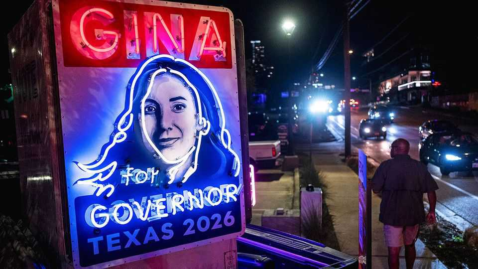

A political revolution in Texas
What will Democrats do with control of America’s most iconic red state?

Nov 5th 2026
“EVERYTHING IS BIGGER in Texas, including the shock of this win,” Gina Hinojosa said in her victory speech on November 3rd. Though she had spent months telling voters that a Democrat could win the governorship, she clearly hadn’t believed it. At an election-night watch party for James Talarico, the Democratic Senate candidate, staffers refreshed early-voting results pages, wondering if stellar numbers were a glitch—pundits had reckoned he could win only narrowly. By midnight, bleary-eyed Texans in “Talafreako” shirts flooded downtown Austin cheering in disbelief: Democrats had swept Texas, claiming the Senate seat by a 12-point margin, replacing every Republican statewide official on the ballot, picking up one congressional seat and flipping the Texas House. Republicans had outspent them more than two to one. It was a stunning upset in what has been America’s biggest red state.
Democrats won back some Texans who had voted Republican in 2024. This year average margins of victory in four South Texas districts topped 20 points, as dismay over economic issues and immigration-enforcement tactics sent voters rushing back to Democrats. The party also, at last, convinced more longtime Republicans to try something new. Collin, Denton and Tarrant counties, Republican-leaning suburbs north of Dallas, all flipped. Democrats won four of the five congressional seats that Texas Republicans gerrymandered last year, ostensibly in their favour.
What will Texas Democrats do with their new power? Kendall Scudder, the state Democratic Party chairman, insists Texas Democrats are different from their national counterparts. “A lot of us really believe that the government should provide you with positive services, be fair to everybody and get the hell out of your lives,” he told The Economist the morning after the election. The task now, he added, is to “start dispelling these myths that they perpetuate through Fox News that we’re a bunch of tax-and-spend liberals, but instead be responsible stewards.” Asked whether the party would prioritise rolling back social policies, such as Texas’s strict abortion ban, he didn’t respond directly. Instead, he said he hopes Democrats in Washington can reverse the cuts of the One Big Beautiful Bill Act, particularly to health care. Texas has the country’s highest rate of uninsured citizens; less money for rural health care is due to force hospital closures across the state.
Ms Hinojosa’s defeat of Greg Abbott, a three-term governor, was even more of a surprise than Democrats’ victories in Congress. Constraints on her power within the state remain. Her Trumpian campaign promise to send every Texas household a $1,500 cheque, dubbed the “corruption tax refund”, could cost the state $17bn and is unlikely to gain the support of the Republican-controlled state Senate. State agencies, university boards and policy commissions are staffed by some 2,500 bureaucrats, many of whom serve six-year terms and none of whom the governor can sack. Nor can Ms Hinojosa reshape the courts. Seven of the state’s nine Supreme Court justices were appointed by Mr Abbott.
Nevertheless, she plans to start dismantling many of Mr Abbott’s policies. She campaigned against data centres, which Mr Abbott initially welcomed, and wants to end “corporate welfare”, which businesses fear will mean ending tax breaks. Ms Hinojosa and Mr Talarico also fought bitterly against the state’s $1bn school-voucher scheme, which launched this autumn. Expect Ms Hinojosa to fire the Republican education commissioner and for Sarah Eckhardt, the new Democratic comptroller, to start scrutinising public funding for private schools.
The party’s other priorities include anti-corruption legislation and cutting property taxes; those levies rose by 86% during Mr Abbott’s tenure. Nathan Johnson, the incoming attorney-general, may join other blue states—still a surreal phrase—in suing the Trump administration. “After getting punched in the face for 30 years, it’s now time to get to work,” says Jason Sabo, a Democratic lobbyist in Austin. The immediate task for Democrats is staffing up. “We don’t have the muscle,” says Mr Scudder, who joked that he has suddenly realised he must plan an inauguration.
Democrats’ thrill at winning in Texas is tempered by the knowledge that this year was unusual. Dissatisfaction in Texas, as elsewhere, was extreme. Ken Paxton, the Republican Senate nominee, was an abysmal candidate and Mr Abbott’s long tenure provided Democrats with an easy target at which to direct voters’ angst. Republican candidates and deep-pocketed donors are likely to attempt a broad, well-funded comeback. In the Lone Star State political realignment doesn’t happen overnight, says Cal Jillson of Southern Methodist University. “Even if Democrats don’t disappoint,” Mr Jillson explains, “Texas is not a blue state now.” The party will work hard to make it so. ■
Stay on top of American politics with The US in brief, our daily newsletter with fast analysis of the most important political news, and Checks and Balance, a weekly note that examines the state of American democracy and the issues that matter to voters.